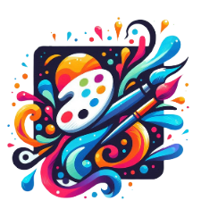

Bem-vindo ao Arte Nova! Somos Lúcia Costa e Ricardo Almeida, uma dupla apaixonada pela expressão artística contemporânea. Nosso objetivo é criar um espaço onde a criatividade e a inovação se encontram, oferecendo uma plataforma para arte que desafia e inspira. |
|
|  | |
Nossa História:Tudo começou em 2018, quando Lúcia, uma artista plástica apaixonada por técnicas mistas, conheceu Ricardo, um designer gráfico especializado em arte digital. Juntos, fundaram o Arte Nova com a visão de unir diferentes formas de expressão artística em um só lugar. Desde então, temos explorado e expandido nosso repertório artístico, participando de exposições internacionais e colaborando com artistas emergentes. |
|
Nossa Abordagem:Adotamos um estilo híbrido que mistura técnicas tradicionais com inovações digitais. Nossas criações são inspiradas por temas como natureza urbana, cultura pop, e experiências pessoais. Acreditamos na arte como um meio de diálogo e reflexão, buscando sempre provocar novas maneiras de ver o mundo. |
|
Conheça a Equipe:
|
|
O Futuro:Estamos empolgados para os próximos projetos, incluindo uma nova série de instalações interativas e uma exposição sobre arte e tecnologia. Fique atento às novidades e junte-se a nós nesta jornada criativa! |
|